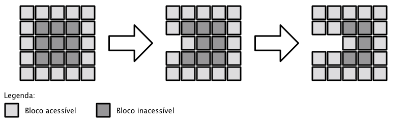

Roberterson e as pedras preciosas
TL: 2 segundos
ML: 128 MB
Roberterson ganha a vida minerando e vendendo pedras preciosas. Ele é reconhecido pelo seu trabalho pois é extremamente metódico e experiente, minerando blocos quadrados de 1 m2 de cada vez. Semana passada a sua principal fonte de pedras preciosas se esgotou e agora ele está procurando por uma nova fonte. Caminhando por aí com a sua velha picareta, ele ficou surpreso quando finalmente encontrou uma fonte promissora.
Na sua frente estava um bloco rochoso com N metros de comprimento por M de largura. Antes de voltar para casa ele gostaria de obter o máximo valor possível em pedras, mas a sua picareta só irá aguentar minerar K metros quadrados até quebrar. Com sua vasta experiência ele consegue determinar com certeza qual é o valor em pedras preciosas de cada bloco de 1 metro quadrado que está acessível, mas ele não pode concluir nada sobre os blocos que estão ocultos no meio. Depois de pensar bastante, ele resolveu usar a estratégia de minerar sempre o bloco de maior valor que ele tem acesso, até que sua picareta quebre.
Blocos acessíveis e não acessíveis depois da mineração de dois blocos:

Dado o valor de cada metro quadrado do bloco rochoso de dimensões N por M, imprima o qual é valor total em pedras preciosas que Roberterson vai levar para casa.
Entrada
A entrada é composta por vários casos de teste. Cada caso de teste possui na primeira linha os inteiros N (1 ≤ N ≤ 150) e M (1 ≤ M ≤ 150) indicando as dimensões do bloco rochoso e o inteiro K (0 ≤ K ≤ M*N) . As próximas N linhas contém M inteiros cada, indicando o valor de cada quadrado de 1m2. Os valores são positivos, menores que 10^9 e são diferentes uns dos outros.
Saída
Imprima o valor total em pedras preciosas que Roberterson irá levar para casa.
Exemplos
Entrada de Teste
5 4 7
8 25 24 9
6 23 20 4
10 16 18 13
3 5 11 17
2 22 19 12
Saída de Teste
151